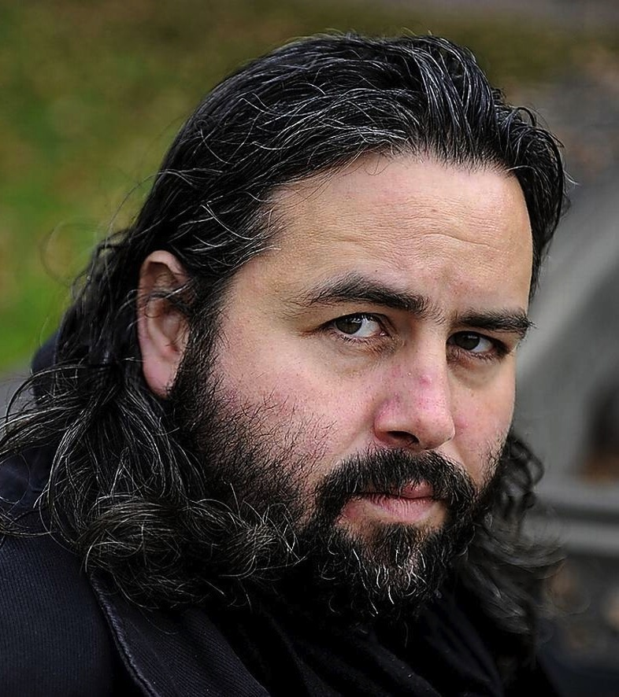

Hoyte van Hoytema

Hoyte van Hoytema, ASC, (Dutch pronunciation: [ˌɦɔi̯tə vɑn ˈɦɔi̯təma]; born 4 October 1971)[1] is a Dutch cinematographer who studied at the National Film School in Łódź. His work includes Let the Right One In (2008), The Fighter (2010), Tinker Tailor Soldier Spy (2011), Her (2013), the James Bond film Spectre (2015), Ad Astra (2019), and Nope (2022). Van Hoytema is also known for his collaborations with director Christopher Nolan, having shot Interstellar (2014), Dunkirk (2017), Tenet (2020), and Oppenheimer (2023). His work has been highly praised by film critics and audiences alike and has earned him multiple awards, including one Academy Award nomination and three BAFTA Award nominations for Best Cinematography.[2]